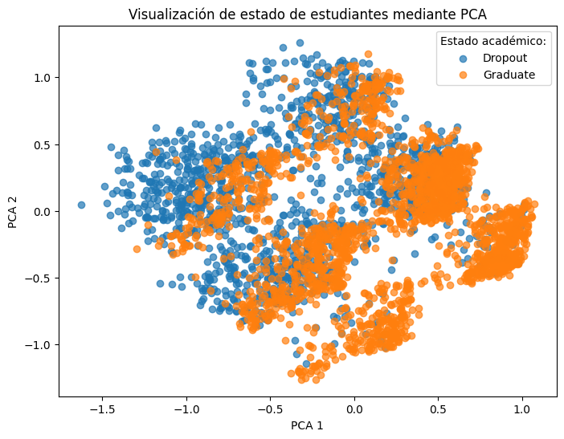
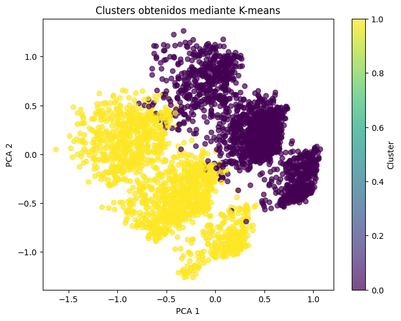

Proyecto académico
Predicción de la deserción estudiantil
Análisis de datos educativos mediante técnicas de Machine Learning para predecir la graduación o deserción de estudiantes universitarios. El proyecto combina modelos supervisados, reducción de dimensionalidad y métodos de clustering para estudiar tanto la capacidad predictiva como la estructura interna de los datos.Problema
La deserción universitaria representa un desafío relevante para estudiantes e instituciones, ya que puede estar asociada a factores académicos, demográficos y socioeconómicos. Identificar tempranamente patrones relacionados con el abandono puede contribuir al diseño de estrategias de acompañamiento y apoyo1.
En este proyecto se aborda un problema de clasificación supervisada cuyo objetivo es predecir si un estudiante se graduará o abandonará sus estudios utilizando únicamente información disponible hasta el término del primer semestre.
Solución
Se desarrolló un flujo completo de Machine Learning que incluyó preparación y normalización de los datos 2, selección de variables y separación estratificada de los conjuntos de entrenamiento y prueba.
Para construir los modelos se utilizaron variables disponibles al momento del ingreso del estudiante y durante su primer semestre. La información se organizó en cuatro grupos principales:
| Grupo de variables | Ejemplos | Propósito |
|---|---|---|
| Antecedentes demográficos | Edad, género, nacionalidad, estado civil y condición de estudiante internacional. | Caracterizar el perfil personal del estudiante al momento del ingreso. |
| Condiciones socioeconómicas | Becas, deudas, pago de aranceles, condición de desplazado y nivel educativo u ocupación de los padres. | Representar factores económicos y familiares que pueden influir en la permanencia en la institución. |
| Antecedentes de ingreso | Modalidad de admisión, prioridad de postulación, carrera, jornada y calificación previa. | Describir las condiciones académicas y administrativas con las que el estudiante ingresa. |
| Desempeño académico inicial | Asignaturas inscritas, aprobadas, evaluaciones, créditos y promedio de notas del primer semestre. | Incorporar evidencia temprana sobre el avance académico del estudiante. |
| Contexto económico | Tasa de desempleo, inflación y Producto Interno Bruto. | Considerar las condiciones económicas existentes durante el periodo de ingreso. |
| Variable objetivo | Graduación o deserción. | Definir el resultado académico que los modelos buscan predecir. |
Tabla 1. Resumen de los principales grupos de variables utilizados para entrenar los modelos de Machine Learning.
Para evitar fuga de información, se eliminaron las variables asociadas al segundo semestre, ya que contienen información posterior al momento en que se desea realizar la predicción. Además, se excluyeron los registros de estudiantes que aún se encontraban matriculados, formulando así un problema de clasificación binaria entre graduación y deserción.
Posteriormente, se compararon modelos de clasificación como Support Vector Machine lineal y con kernel RBF, Random Forest y una red neuronal feedforward. Además, se utilizaron PCA y t-SNE para visualizar la estructura de los datos, junto con K-means y DBSCAN para explorar agrupamientos naturales entre los estudiantes.
Exploración de los datos
Antes de entrenar los modelos, se aplicó el Análisis de Componentes Principales (PCA) para proyectar los datos en dos dimensiones y explorar visualmente su estructura. Esta técnica permitió evaluar si existían patrones o agrupamientos naturales entre estudiantes graduados y desertores.

Figura 1. Proyección bidimensional de los estudiantes mediante Análisis de Componentes Principales (PCA). Se observa una superposición considerable entre las categorías Graduate y Dropout, lo que evidencia la complejidad del problema de clasificación.
Exploración y análisis no supervisado
Como complemento al análisis supervisado, se aplicó el algoritmo K-means para explorar la existencia de agrupamientos naturales entre los estudiantes sin utilizar las etiquetas de graduación o deserción.

Figura 2. Agrupamientos obtenidos mediante K-means utilizando dos clusters. Aunque el algoritmo identifica grupos diferenciados, estos no coinciden completamente con las categorías académicas de graduación y deserción.
Resultados y conclusión
Los modelos se evaluaron considerando su desempeño durante el entrenamiento, la validación cruzada y la prueba sobre datos no utilizados para su ajuste. La siguiente tabla resume los resultados obtenidos:
Comparación de modelos supervisados
| Modelo | Entrenamiento | Validación | Prueba |
|---|---|---|---|
| SVM lineal | 89,02 % | 88,12 % | 90,08 % |
| SVM con kernel RBF | 89,33 % | 88,12 % | 89,26 % |
| Random Forest | 100,00 % | 88,60 % | 89,12 % |
| Red neuronal | 91,53 % | — | 88,57 % |
Tabla 2. Comparación del desempeño de los modelos supervisados en entrenamiento, validación cruzada y conjunto de prueba.
SVM lineal obtuvo el mejor desempeño sobre el conjunto de prueba, con una exactitud cercana al 90,1 %. Aunque las diferencias entre los modelos fueron pequeñas, este resultado muestra que un modelo relativamente sencillo fue capaz de generalizar mejor que alternativas más complejas.
Random Forest alcanzó una exactitud perfecta durante el entrenamiento, pero su desempeño disminuyó en validación y prueba. Esta diferencia evidencia sobreajuste: el modelo aprendió con gran precisión los datos utilizados para entrenarlo, pero no logró mantener el mismo rendimiento frente a nuevas observaciones.
La red neuronal tampoco superó a los modelos clásicos, lo que refuerza que la complejidad del modelo no garantiza necesariamente una mejor capacidad de generalización.
Desde una perspectiva educacional, los resultados muestran que la información disponible durante el ingreso y el primer semestre contiene señales relevantes para anticipar la trayectoria académica de un estudiante. Este tipo de modelos podría servir como herramienta de apoyo para identificar estudiantes en riesgo de deserción y orientar intervenciones tempranas por parte de las instituciones de educación superior, siempre considerando criterios éticos y el uso responsable de los datos.
Repositorio
Este proyecto nació como parte del curso Fundamentos de Machine Learning del Diplomado en Machine Learning de la Pontificia Universidad Católica de Chile (UC). Posteriormente fue reorganizado y documentado para formar parte de este portafolio, incorporando una estructura orientada a facilitar la reproducción del análisis y la comprensión del flujo completo de trabajo.
Contenido del repositorio
- --